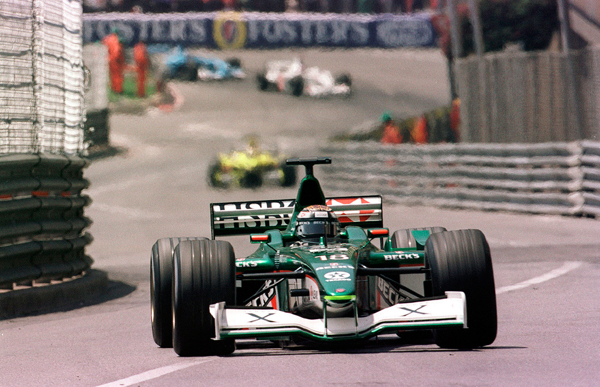
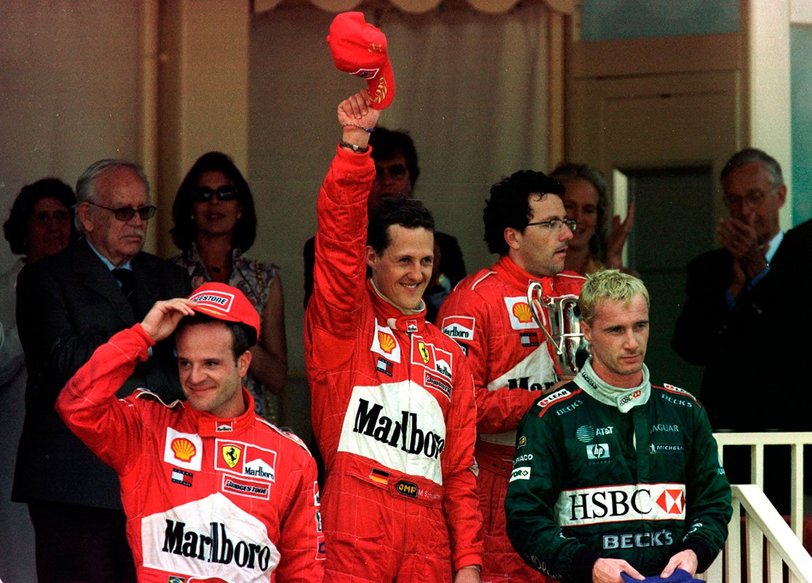

FÁCIL DEMAIS
Michael Schumacher vence tranquilo em Mônaco, depois de a McLaren fazer uma corrida desastrosa
POR VENÍCIO ZAMBELI
As ruas do principado de Mônaco receberam pela 48ª vez os carros da Fórmula 1. O tradicional Grande Prêmio de Mônaco assistiu à quinta vitória de Michael Schumacher (48ª conquista da sua carreira), que se igualou ao número de vitórias do “Mister Mônaco”, como era conhecido o inglês Grahan Hill, que venceu também cinco vezes em Monte Cario. O maior vencedor deste grande prêmio continua sendo o piloto Ayrton Senna, com seis vitórias. A quarta vitória do ano do piloto alemão da Ferrari — em oito corridas realizadas até agora — foi obtida de maneira tranquila. Depois de assistir ao domínio dos carros da McLaren em todos os treinos do final de semana, inclusive no classificatório quando David Coulthard tirou a pole position de Schumacher nos instantes finais, tudo deu certo para a Ferrari na prova.
Antes mesmo da largada, um sinal de que nada daria certo para a equipe McLaren. O pole position David Coulthard não conseguiu largar para a volta de apresentação. Mais uma vez, como aconteceu no Grande Prêmio da Espanha deste ano, um problema no sistema de largada apagou o motor. O piloto escocês, que tinha a chance de disputar diretamente com Schumacher a liderança do Mundial de Pilotos (a diferença entre os dois, até esta corrida, era de 4 pontos a favor do alemão), ainda conseguiu sair depois de todos os outros e largou da última colocação. Schumacher, sem ninguém ao seu lado na largada, assegurou a 1ª posição depois da luz verde, seguido de Mika Hakkinen, Rubens Barrichello, Ralf Schumacher, Juan Pablo Montoya e Eddie Irvine. Ainda na primeira volta, Nick Heidfeld (Sauber) bateu antes da entrada do túnel. Logo após, Montoya exagerou e bateu no guard rail ainda na segunda volta, na área da Piscina. “O erro foi meu”, admitiu o piloto da Williams depois da prova, muito chateado com sua primeira participação em Mônaco na F1. Na frente, Schumacher e Hakkinen se distanciavam. Na volta 12, eles já tinham boa diferença para Barrichello, e parecia que mais uma briga entre os dois estava por vir. Mas na volta seguinte a decepção da McLaren aumentou: o finlandês Hakkinen enfrentou algum problema de dirigibilidade no carro e foi para os boxes. Voltou na 16ª colocação, mas abandonou cinco voltas mais tarde, reclamando muito ainda de algum problema de estabilidade. Com isso, Rubens Barrichello passou a ocupar a 2ª posição.
A corrida tranquila para Schumacher ficou mais evidente, pois o escudeiro Barrichello não iria ameaçar sua posição e ainda poderia segurar um possível ataque de outro concorrente. Enquanto isso, Coulthard, vinha em 15º, tentando ultrapassar Bernoldi, o 14º. Mas a ultrapassagem é muito difícil de ser feita no circuito e o piloto da McLaren ficou mais de 40 voltas atrás do brasileiro, que defendeu bem a posição e só a perdeu quando foi para os boxes. A atitude de Bernoldi gerou polêmica, apesar de ter sido um ato legal, pois ele defendia a posição. Assim que terminou a corrida, Ron Dennis, diretor da McLaren, e Norbert Haug, diretor da Mercedes-Benz, foram tirar satisfações com o brasileiro, alegando falta de ética do piloto. Mas Tom Walkinshaw, chefe da Arrows, logo tratou de ser o primeiro a defender Bernoldi, elogiando seu trabalho na pista. Fisichella, da Benetton, vinha aproveitando-se do estreito circuito, onde as diferenças são menores entre os carros de ponta e os mais fracos, e posicionava-se na 7ª posição. Mas o italiano foi outra vítima dos guard rails de Mônaco: bateu no final da reta dos boxes. Outro que abandonou no meio da prova foi Luciano Burti, da Prost, que já havia parado uma vez nos boxes. Ele abandonou de vez a prova com problemas em seu carro. Jarno Trulli, da Jordan (que vinha em 5º lugar), continuou a série de abandonos, quando um problema hidráulico gerou fogo em seu carro. O beneficiado com todos estes abandonos foi Jean Alesi, da Prost, — que andou bem também durante todos os treinos. O piloto francês subiu assim para a 6ª posição. Foi a vez da outra Jordan, de Heinz Harald-Frentzen, bater, voltas mais tarde. Ao final da reta do túnel, ele perdeu o controle do carro e acertou o guard rail. Mesmo com o modelo EJ11 parado em lugar perigoso, no ponto de maior velocidade do circuito (onde os carros atingem pouco mais de 290 km/h) não foi necessária a entrada do Safety Car, devido ao eficiente trabalho dos guinchos e dos comissários de pista de Monte Carlo.
Michael Schumacher chegou a dar uma volta em cima de Coulthard, mas foi aos boxes na volta na 54, quando tinha mais de 18s de vantagem sobre Barrichello, para realizar o seu único pit stop na corrida. O alemão voltou em 2º, atrás de Barrichello e à frente de Ralf Schumacher, Eddie Irvine e Jean Alesi. Com o abandono de Ralf Schumacher, que teve um problema com a direção de seu Williams, o irlandês Irvine assumiu a 3ª posição para a Jaguar. Jacques Villeneuve conseguiu colocar o BAR outra vez na zona de pontos, em 42. Alesi também ganhou uma posição, indo para 5º, e David Coulthard, que vinha imprimindo um ritmo forte durante a corrida, depois de ter largado em último, já era o 6º colocado. Barrichello foi fazer sua parada e voltou em 2º lugar, com Schumacher liderando. Já na parte final da corrida, o brasileiro Tarso Marques, da Minardi, parou com problemas no câmbio, Coulthard, que retardou ao máximo seu pit stop, fez a troca de pneus e reabastecimento restando 12 voltas para terminar a prova e ainda voltou à frente de Jenson Button, da Benetton, garantindo o 6º lugar. No final, Alesi não conseguiu evitar e teve que fazer um splash and go (para colocar mais combustível) e voltou atrás de Coulthard, que ganhou mais uma posição, indo para 5º. Na volta 78, Schumacher completou a prova em 1h47min22s561, recebendo a bandeirada à frente de Barrichello, fazendo uma dobradinha da Ferrari em Mônaco. Em 3º lugar veio Irvine, conseguindo o primeiro pódio para a equipe inglesa Jaguar em dois anos de existência na Fórmula 1. “Depois de muitas críticas a mim e à equipe, mostramos na pista do que somos capazes” disse o piloto irlandês após a prova. Assim como Irvine, Villeneuve (4º lugar), Coulthard (5º) e Alesi (6°) herdaram as posições dos diversos abandonos da corrida e terminaram na zona de pontuação.

A festa de Schumacher foi grande depois da prova, apesar do próprio piloto ter admitido que foi uma corrida fácil e sem graça, pois ele não teve com o que se preocupar na corrida. O mesmo não aconteceu com Barrichello, que logo no início sentiu câimbra no pé direito, o que o incomodou no resto de toda a corrida. Já Coulthard estava satisfeito com o resultado, mesmo depois de ter o problema na largada. “Pontuei de novo. Mas precisamos treinar mais o sistema de largada para que nunca mais aconteça isto”, comentou o escocês. Com a 52 posição, Coulthard somou mais dois pontos no Mundial de Pilotos, passando a 40 no total. Schumacher somou 10 pontos e foi a 52. Entre os construtores, a líder Ferrari abriu boa vantagem sobre a 2ª colocada McLaren: 76 pontos contra 44.
